<!DOCTYPE html>
<html>
<head><meta name="generator" content="Hexo 3.8.0">
    <meta charset="utf-8">
    
    <title>Windows Digital Signature | J Dev</title>
    <meta name="viewport" content="width=device-width, initial-scale=1, maximum-scale=1">
    
        <meta name="keywords" content="windows">
    
    <meta name="description" content="사설 인증서로 실행 파일 전자서명(디지털서명, digital signature, 코드 사이닝, 코드 사인, code sign) 하기응용 프로그램을 만들어 서버에 업로드 후 배포를 하게 되면 다운로드를 받거나 다운로드 받은 응용 프로그램을 다른 컴퓨터에서 실행할려고 하면 출처가 불명확한 게시자없음으로 인해 악성 프로그램으로 인식하게 된다.그래서 이를 해결할려">
<meta name="keywords" content="windows">
<meta property="og:type" content="article">
<meta property="og:title" content="Windows Digital Signature">
<meta property="og:url" content="http://woonyzzang.github.com/2017/04/19/windows-digital-signature/index.html">
<meta property="og:site_name" content="J Dev">
<meta property="og:description" content="사설 인증서로 실행 파일 전자서명(디지털서명, digital signature, 코드 사이닝, 코드 사인, code sign) 하기응용 프로그램을 만들어 서버에 업로드 후 배포를 하게 되면 다운로드를 받거나 다운로드 받은 응용 프로그램을 다른 컴퓨터에서 실행할려고 하면 출처가 불명확한 게시자없음으로 인해 악성 프로그램으로 인식하게 된다.그래서 이를 해결할려">
<meta property="og:locale" content="en">
<meta property="og:image" content="http://woonyzzang.github.com/2017/04/19/windows-digital-signature/windows-digital-signature1.png">
<meta property="og:updated_time" content="2017-05-12T07:32:54.000Z">
<meta name="twitter:card" content="summary">
<meta name="twitter:title" content="Windows Digital Signature">
<meta name="twitter:description" content="사설 인증서로 실행 파일 전자서명(디지털서명, digital signature, 코드 사이닝, 코드 사인, code sign) 하기응용 프로그램을 만들어 서버에 업로드 후 배포를 하게 되면 다운로드를 받거나 다운로드 받은 응용 프로그램을 다른 컴퓨터에서 실행할려고 하면 출처가 불명확한 게시자없음으로 인해 악성 프로그램으로 인식하게 된다.그래서 이를 해결할려">
<meta name="twitter:image" content="http://woonyzzang.github.com/2017/04/19/windows-digital-signature/windows-digital-signature1.png">
    
    <link rel="canonical" href="http://woonyzzang.github.com/2017/04/19/windows-digital-signature/">

    

    
        <link rel="icon" href="/images/favicon.png">
    

    <link rel="stylesheet" href="/libs/font-awesome/css/font-awesome.min.css">
    <link rel="stylesheet" href="/libs/titillium-web/styles.css">
    <link rel="stylesheet" href="/libs/source-code-pro/styles.css">

    <link rel="stylesheet" href="/css/style.css">

    <script src="/libs/jquery/2.0.3/jquery.min.js"></script>
    
    
        <link rel="stylesheet" href="/libs/lightgallery/css/lightgallery.min.css">
    
    
    

</head>
</html>
<body>
    <div id="wrap">
        <header id="header">
    <div id="header-outer" class="outer">
        <div class="container">
            <div class="container-inner">
                <div id="header-title">
                    <h1 class="logo-wrap">
                        <a href="/" class="logo"></a>
                    </h1>
                    
                        <h2 class="subtitle-wrap">
                            <p class="subtitle">Web Development Story Blog</p>
                        </h2>
                    
                </div>
                <div id="header-inner" class="nav-container">
                    <a id="main-nav-toggle" class="nav-icon fa fa-bars"></a>
                    <div class="nav-container-inner">
                        <ul id="main-nav">
                            
                                <li class="main-nav-list-item">
                                    <a class="main-nav-list-link" href="/">Home</a>
                                </li>
                            
                                        <ul class="main-nav-list"><li class="main-nav-list-item"><a class="main-nav-list-link" href="/categories/App/">App</a><ul class="main-nav-list-child"><li class="main-nav-list-item"><a class="main-nav-list-link" href="/categories/App/Ionic/">Ionic</a></li></ul></li><li class="main-nav-list-item"><a class="main-nav-list-link" href="/categories/Editor/">Editor</a><ul class="main-nav-list-child"><li class="main-nav-list-item"><a class="main-nav-list-link" href="/categories/Editor/SublimeText/">SublimeText</a></li><li class="main-nav-list-item"><a class="main-nav-list-link" href="/categories/Editor/Visualstudio/">Visualstudio</a></li><li class="main-nav-list-item"><a class="main-nav-list-link" href="/categories/Editor/Webstorm/">Webstorm</a></li></ul></li><li class="main-nav-list-item"><a class="main-nav-list-link" href="/categories/Etc/">Etc</a><ul class="main-nav-list-child"><li class="main-nav-list-item"><a class="main-nav-list-link" href="/categories/Etc/Log/">Log</a></li></ul></li><li class="main-nav-list-item"><a class="main-nav-list-link" href="/categories/FrontEnd/">FrontEnd</a><ul class="main-nav-list-child"><li class="main-nav-list-item"><a class="main-nav-list-link" href="/categories/FrontEnd/Angular-js/">Angular.js</a></li><li class="main-nav-list-item"><a class="main-nav-list-link" href="/categories/FrontEnd/Backbone-js/">Backbone.js</a></li><li class="main-nav-list-item"><a class="main-nav-list-link" href="/categories/FrontEnd/D3-js/">D3.js</a></li><li class="main-nav-list-item"><a class="main-nav-list-link" href="/categories/FrontEnd/Javascript-js/">Javascript.js</a></li><li class="main-nav-list-item"><a class="main-nav-list-link" href="/categories/FrontEnd/Node-js/">Node.js</a></li><li class="main-nav-list-item"><a class="main-nav-list-link" href="/categories/FrontEnd/React-js/">React.js</a></li><li class="main-nav-list-item"><a class="main-nav-list-link" href="/categories/FrontEnd/Require-js/">Require.js</a></li><li class="main-nav-list-item"><a class="main-nav-list-link" href="/categories/FrontEnd/Webpack/">Webpack</a></li><li class="main-nav-list-item"><a class="main-nav-list-link" href="/categories/FrontEnd/jQuery/">jQuery</a></li></ul></li><li class="main-nav-list-item"><a class="main-nav-list-link" href="/categories/OS/">OS</a><ul class="main-nav-list-child"><li class="main-nav-list-item"><a class="main-nav-list-link" href="/categories/OS/CentOS/">CentOS</a></li><li class="main-nav-list-item"><a class="main-nav-list-link" href="/categories/OS/Mac/">Mac</a></li><li class="main-nav-list-item"><a class="main-nav-list-link" href="/categories/OS/Ubuntu/">Ubuntu</a></li><li class="main-nav-list-item"><a class="main-nav-list-link" href="/categories/OS/Windows/">Windows</a></li></ul></li><li class="main-nav-list-item"><a class="main-nav-list-link" href="/categories/Server/">Server</a><ul class="main-nav-list-child"><li class="main-nav-list-item"><a class="main-nav-list-link" href="/categories/Server/ASP/">ASP</a></li><li class="main-nav-list-item"><a class="main-nav-list-link" href="/categories/Server/AWS/">AWS</a></li><li class="main-nav-list-item"><a class="main-nav-list-link" href="/categories/Server/Docker/">Docker</a></li><li class="main-nav-list-item"><a class="main-nav-list-link" href="/categories/Server/Gitlab/">Gitlab</a></li></ul></li><li class="main-nav-list-item"><a class="main-nav-list-link" href="/categories/Tools/">Tools</a><ul class="main-nav-list-child"><li class="main-nav-list-item"><a class="main-nav-list-link" href="/categories/Tools/APMSETUP/">APMSETUP</a></li><li class="main-nav-list-item"><a class="main-nav-list-link" href="/categories/Tools/Fiddler/">Fiddler</a></li><li class="main-nav-list-item"><a class="main-nav-list-link" href="/categories/Tools/OpenSSl/">OpenSSl</a></li></ul></li><li class="main-nav-list-item"><a class="main-nav-list-link" href="/categories/Web/">Web</a><ul class="main-nav-list-child"><li class="main-nav-list-item"><a class="main-nav-list-link" href="/categories/Web/CSS/">CSS</a></li><li class="main-nav-list-item"><a class="main-nav-list-link" href="/categories/Web/Descktop/">Descktop</a></li><li class="main-nav-list-item"><a class="main-nav-list-link" href="/categories/Web/Mobile/">Mobile</a></li><li class="main-nav-list-item"><a class="main-nav-list-link" href="/categories/Web/Others/">Others</a></li></ul></li></ul>
                                    
                        </ul>
                        <nav id="sub-nav">
                            <div id="search-form-wrap">

    <form class="search-form">
        <input type="text" class="ins-search-input search-form-input" placeholder="Search">
        <button type="submit" class="search-form-submit"></button>
    </form>
    <div class="ins-search">
    <div class="ins-search-mask"></div>
    <div class="ins-search-container">
        <div class="ins-input-wrapper">
            <input type="text" class="ins-search-input" placeholder="Type something...">
            <span class="ins-close ins-selectable"><i class="fa fa-times-circle"></i></span>
        </div>
        <div class="ins-section-wrapper">
            <div class="ins-section-container"></div>
        </div>
    </div>
</div>
<script>
(function (window) {
    var INSIGHT_CONFIG = {
        TRANSLATION: {
            POSTS: 'Posts',
            PAGES: 'Pages',
            CATEGORIES: 'Categories',
            TAGS: 'Tags',
            UNTITLED: '(Untitled)',
        },
        ROOT_URL: '/',
        CONTENT_URL: '/content.json',
    };
    window.INSIGHT_CONFIG = INSIGHT_CONFIG;
})(window);
</script>
<script src="/js/insight.js"></script>

</div>
                        </nav>
                    </div>
                </div>
            </div>
        </div>
    </div>
</header>
        <div class="container">
            <div class="main-body container-inner">
                <div class="main-body-inner">
                    <section id="main">
                        <div class="main-body-header">
    <h1 class="header">
    
    <a class="page-title-link" href="/categories/OS/">OS</a><i class="icon fa fa-angle-right"></i><a class="page-title-link" href="/categories/OS/Windows/">Windows</a>
    </h1>
</div>
                        <div class="main-body-content">
                            <article id="post-windows-digital-signature" class="article article-single article-type-post" itemscope="" itemprop="blogPost">
    <div class="article-inner">
        
            <header class="article-header">
                
    
        <h1 class="article-title" itemprop="name">
        Windows Digital Signature
        </h1>
    

            </header>
        
        
            <div class="article-subtitle">
                <a href="/2017/04/19/windows-digital-signature/" class="article-date">
    <time datetime="2017-04-19T14:50:10.000Z" itemprop="datePublished">2017-04-19</time>
</a>
                
    <ul class="article-tag-list"><li class="article-tag-list-item"><a class="article-tag-list-link" href="/tags/windows/">windows</a></li></ul>

            </div>
        
        
        <div class="article-entry" itemprop="articleBody">
            <h3 id="사설-인증서로-실행-파일-전자서명-디지털서명-digital-signature-코드-사이닝-코드-사인-code-sign-하기"><a href="#사설-인증서로-실행-파일-전자서명-디지털서명-digital-signature-코드-사이닝-코드-사인-code-sign-하기" class="headerlink" title="사설 인증서로 실행 파일 전자서명(디지털서명, digital signature, 코드 사이닝, 코드 사인, code sign) 하기"></a>사설 인증서로 실행 파일 전자서명(디지털서명, digital signature, 코드 사이닝, 코드 사인, code sign) 하기</h3><p>응용 프로그램을 만들어 서버에 업로드 후 배포를 하게 되면 다운로드를 받거나 다운로드 받은 응용 프로그램을 다른 컴퓨터에서 실행할려고 하면 출처가 불명확한 게시자없음으로 인해 악성 프로그램으로 인식하게 된다.<br>그래서 이를 해결할려면 디지털 서명을 응용프로그램 안에 넣어야 한다.</p>
<p>사설 인증서를 생성하고 이를 PC내의 신뢰된 루트 인증 기관  리스트에 강제 추가한뒤, 이를 가지고 디지털 서명하는 절차를 정리한다.</p>
<ul>
<li>Microsoft Windows SDK 사용하는 방법</li>
<li>Microsoft SignTool 사용하는 방법</li>
</ul>
<p>확인해 보니 보통 openssl을 이용할 거나, MS Windows SDK, MS SignTool 등등 있었다. 여기서는 MS에서 제공한 Microsoft Windows SDK 툴을 기반으로 진행한다.</p>
<h3 id="Microsoft-Windows-SDK-설치"><a href="#Microsoft-Windows-SDK-설치" class="headerlink" title="Microsoft Windows SDK 설치"></a>Microsoft Windows SDK 설치</h3><p>다운로드:<a href="https://www.microsoft.com/en-us/download/details.aspx?id=8279" target="_blank" rel="noopener">https://www.microsoft.com/en-us/download/details.aspx?id=8279</a></p>
<p>설치가 완료되면 설치파일 경로에서 <figure class="highlight plain"><figcaption><span>Files\Microsoft Platform SDK ... \Bin``` 경로에서 명령프롬프트를 관리자 권한으로 실행한다.</span></figcaption><table><tr><td class="gutter"><pre><span class="line">1</span><br><span class="line">2</span><br><span class="line">3</span><br><span class="line">4</span><br><span class="line">5</span><br><span class="line">6</span><br><span class="line">7</span><br><span class="line">8</span><br></pre></td><td class="code"><pre><span class="line"></span><br><span class="line">** 루트 인증서 진행 과정 **</span><br><span class="line">XXXXXXXXX에 인증서 이름을 넣고 명령어를 실행한다. 앞선 &quot;신뢰할 수 있는 루트 인증 기관&quot; UI의 &quot;발급 대상&quot;에 해당된다고 보면 된다.</span><br><span class="line">``` bash</span><br><span class="line">$ makecert -n &quot;CN=XXXXXXXXX&quot; -r -sv  ca.pvk ca.cer</span><br><span class="line"></span><br><span class="line">// ex)</span><br><span class="line">$ makecert -n &quot;CN=woonyzzang Co.&quot; -r -sv  ca.pvk ca.cer</span><br></pre></td></tr></table></figure></p>
<p>그럼 아래와 같은 창이 뜨는데,<br>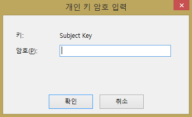<br>이는 해당 루트 인증서로 서명된 또다른 인증서를 만들때 필요한 암호를 입력하는 것입니다. 만일, 관여하지 않겠다면 “없음”해도 무방 하다.<br>여기서는 암호키를 입력하고 진행한다. (주의: 개인 키 암호를 임의로 입력 시 암호 기억)<br>그러면 해당 디렉토리에 .cer과 .pvk파일이 생성된다.<br>.cer 파일은 배포 가능한 인증서 파일이며, .pvk 파일은 개인키 파일이므로, 신중히 보관하시기 바란다.</p>
<p>만일 spc 파일이 필요한 경우라면,<br><figure class="highlight bash"><table><tr><td class="gutter"><pre><span class="line">1</span><br></pre></td><td class="code"><pre><span class="line">$ cert2spc.exe ca.cer ca.spc</span><br></pre></td></tr></table></figure></p>
<p>와 같이 구할 수 있습니다.</p>
<p>이제 아래와 같이 실행하여 ca.cer를 “신뢰할 수있는 루트 인증 기관”으로 등록할 수 있습니다.<br><figure class="highlight bash"><table><tr><td class="gutter"><pre><span class="line">1</span><br></pre></td><td class="code"><pre><span class="line">$ certmgr.exe -add ca.cer <span class="_">-s</span> -r <span class="built_in">local</span>Machine root</span><br></pre></td></tr></table></figure></p>
<p>위와 같이 입력하면 ca.cer을 인증기관으로 등록절차가 완료된다.</p>
<p>이제 Internet Explorer &gt; 도구 &gt; 인터넷 옵션 &gt; 내용 &gt; 인증서에 들어가 보면, 아래와 같이 “신뢰할 수 있는 루트 인증 기관”에 woonyzzang Co.가 포함된것을 확인할 수 있다.<br>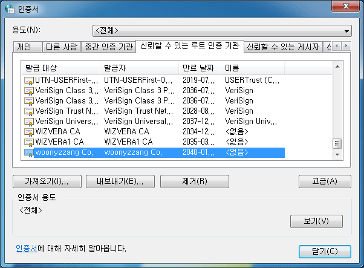</p>
<p>사설 인증서를 “신뢰”할 수 있도록 등록 된걸 확인 했다면, 다시 명령프롬프트로 돌아가서 아래 명령어를 입력한다.<br><figure class="highlight bash"><table><tr><td class="gutter"><pre><span class="line">1</span><br></pre></td><td class="code"><pre><span class="line">$ signtool signwizard</span><br></pre></td></tr></table></figure></p>
<p>그럼 다음과 같이 창이 생성된다.<br>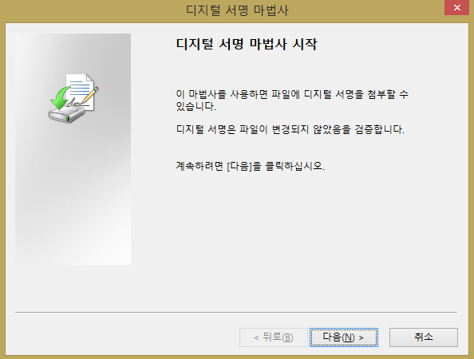<br>다음 버튼을 선택한다.</p>
<p>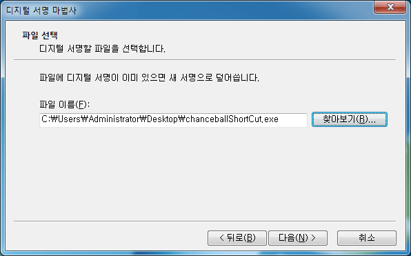<br>디지털 서명 마법사에서 찾아보기를 클릭 후 디지털 파일 서명할 해당 파일을 선택 후 다음 버튼을 선택한다.</p>
<p>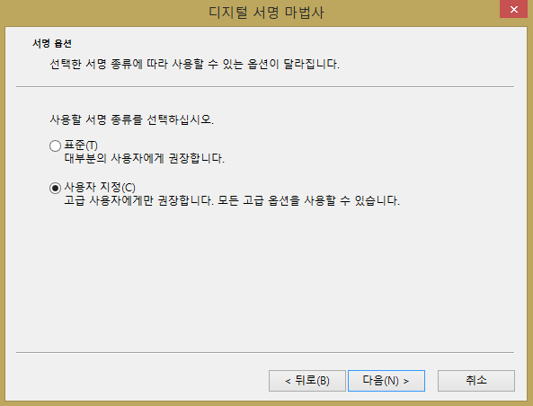<br>사용자 지정을 선택하고 다음을 선택한다.</p>
<p>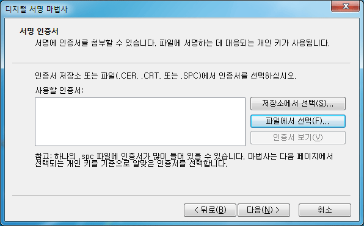<br>오른쪽에 “파일에서 선택”을 선택한다.</p>
<p>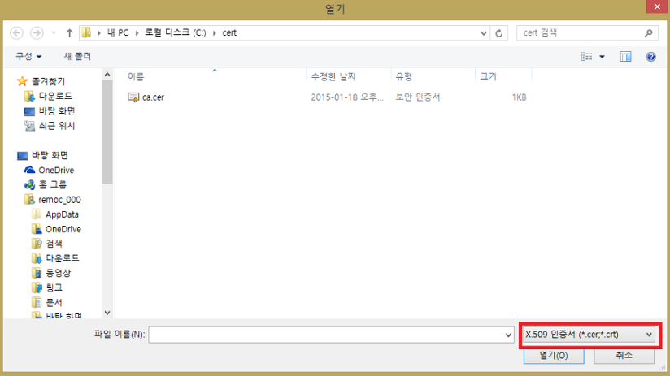<br>오른쪽에 X.509인증서로 바꾼 후에 X.509 인증서(*.cer)을 선택한다.</p>
<p>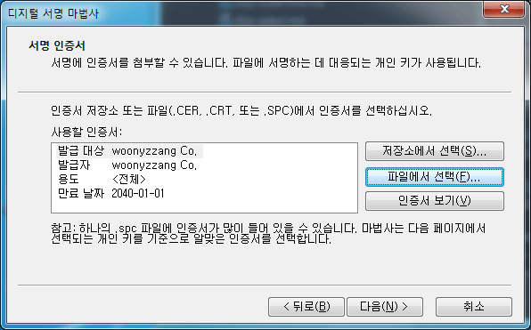<br>이제 다음을 선택한다.</p>
<p>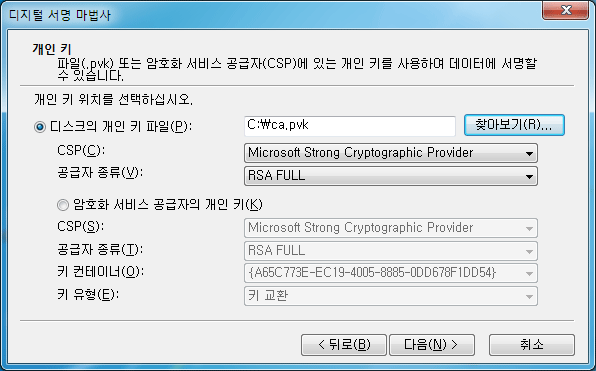<br>디스크의 개인 키 파일에서 ca.pvk 파일 경로를 찾아 선택 후 다음버튼을 선택한다.</p>
<p>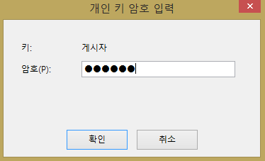<br>처음에 입력한 암호를 입력한다.</p>
<p>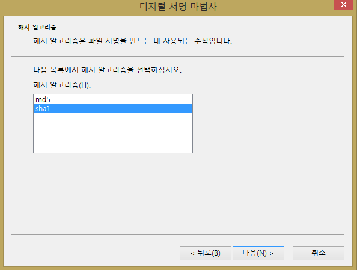<br>sha1을 선택하고 다음버튼을 선택한다.</p>
<p>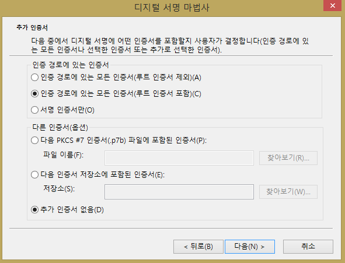<br>필요한 경우 설명을 입력할 수 있다. 여기서는 별다른 설정없이 다음버튼을 선택한다.</p>
<p>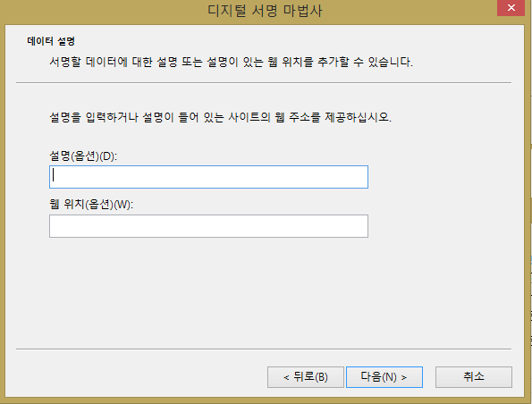<br>필요한 경우 설명을 입력 할 수 있다. 여기서는 역시 별다른 설명없이 다음버튼을 선택한다.</p>
<p>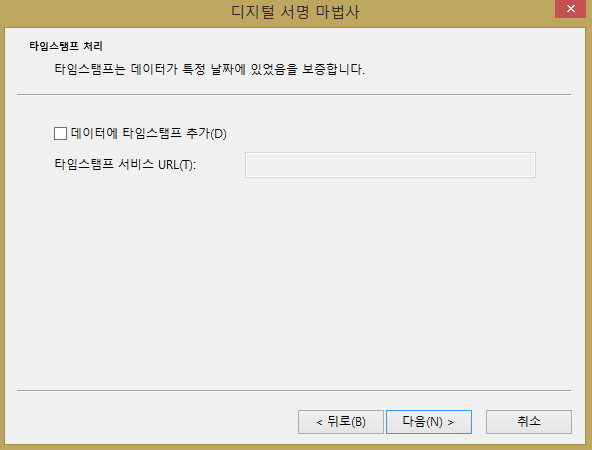<br>타임스탬프를 추가할 일이 없으면 다음버튼을 선택한다.</p>
<p>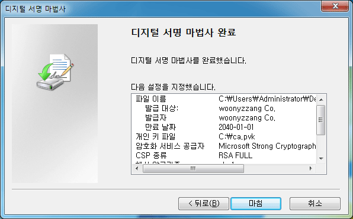<br>디지털 서명이 완료되었다. 마침을 눌러 암호를 한번 더 입력하고 나면 완료된다.</p>
<p><br>이제 디지털 서명이 등록되었습니다. 인터넷을 통해 배포할 때 악성코드로 인식되지 않게 된다.</p>
<p>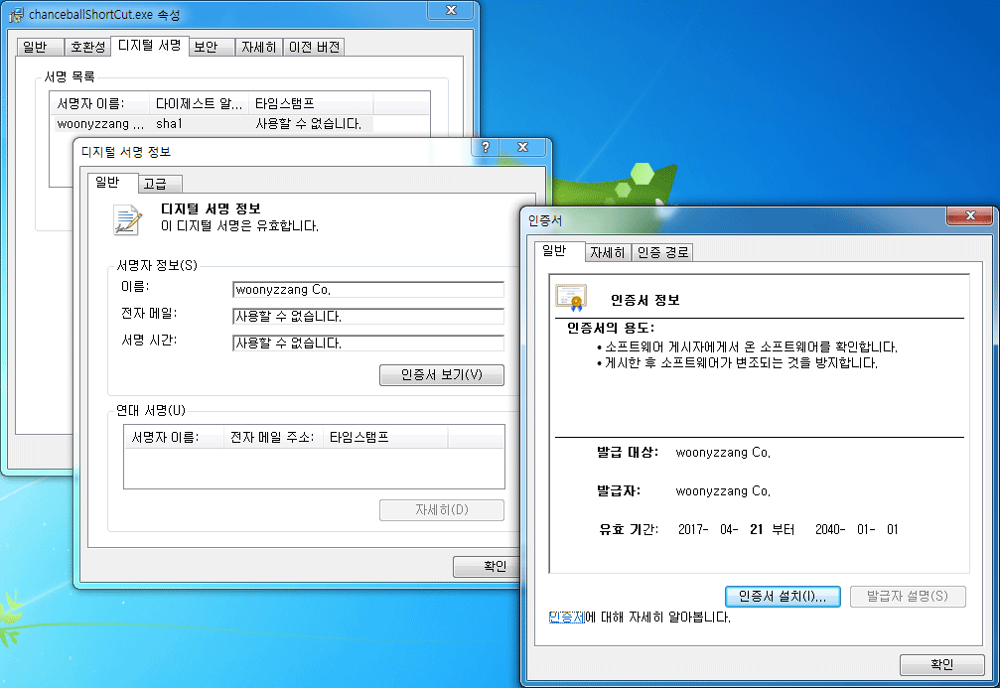<br>디지털 서명이 잘 등록되었는지 확인 해 볼려면 디지털 서명 받은 실행파일에서 마우스 우측 컨텍스트 메뉴를 열어 속성 &gt; 디지털서명 &gt; 자세히보기 클릭 후 확인해 보면 인증서가 제대로 등록된것을 확인 할 수 있다.<br>만일, 신뢰된 루트 인증서에 추가하지 않았다면, 디지털 서명은 되어 변조 여부까지는 판단 가능하지만, 유효(즉, 안전한 출처)하지 않다고 오류가 발생할 것이다.</p>
<p><strong> 이슈 </strong><br>디지털 서명을 해도 테스트 해보니 여전히 익스플로러나 크롬브라우저에서 역시나 악성코드로 인식되는 것이 확인 되었다.<br>신뢰된 인증기관에서 발급된 것이 아니라 그런듯 해서 자료를 더 찾아보니 아래와 같은 명성치라는 이슈를 알게 되었다.</p>
<p><strong> 명성치 </strong><br>MS의 SmartScreen filter는 인증서들에 대한 자체적인 white list DB를 관리하며 해당 인증서가 안전한지 아닌지 판단합니다. 새로 등록된 인증서로 만들어진 파일이 일정 횟수 이상, 일정 기간 이상 동안, 일정 사용자들에게 다운로드 되고, 신고 건수가 없어야 안전한 파일로 white list에 등록한다(SmartScreen filter는 원래 IE에 존재하던 기능이었다가 Windows 8부터는 OS 자체 기능으로도 추가되었다). Google의 Chrome도 이와 비슷한 로직을 가지고 있다.<br>즉, 일정 수준을 명성을 쌓기 전까지는 위험한 프로그램 취급을 하여 사용자들에게 경고 메시지를 보여 준다. 하지만 여기서 답답한 부분은 필요한 ‘다운로드 수’, ‘다운로드 인원’, ‘처리되는 기간’ 등 중요한 정보들이 공개 되어있지 않다는 것이다.</p>
<h3 id="Microsoft-SignTool-설치"><a href="#Microsoft-SignTool-설치" class="headerlink" title="Microsoft SignTool 설치"></a>Microsoft SignTool 설치</h3><p>다운로드: <a href="https://msdn.microsoft.com/en-us/library/windows/desktop/aa387764" target="_blank" rel="noopener">https://msdn.microsoft.com/en-us/library/windows/desktop/aa387764(v=vs.85).aspx</a></p>
<figure class="highlight bash"><table><tr><td class="gutter"><pre><span class="line">1</span><br><span class="line">2</span><br><span class="line">3</span><br><span class="line">4</span><br><span class="line">5</span><br></pre></td><td class="code"><pre><span class="line">$ Signtool.exe sign </span><br><span class="line">    /a </span><br><span class="line">    /f <span class="string">"&#123;인증서 경로&#125;"</span> </span><br><span class="line">    /p <span class="string">"&#123;인증서 비밀번호&#125;"</span> </span><br><span class="line">    /t <span class="string">"&#123;인증서에 따른 Timestamp 서버 주소 예) http://timestamp.verisign.com/scripts/timestamp.dll&#125;"</span></span><br></pre></td></tr></table></figure>
<h3 id="참조"><a href="#참조" class="headerlink" title="참조"></a>참조</h3><ul>
<li><a href="http://greenfishblog.tistory.com/199" target="_blank" rel="noopener">http://greenfishblog.tistory.com/199</a></li>
<li><a href="http://remocon33.tistory.com/385" target="_blank" rel="noopener">http://remocon33.tistory.com/385</a></li>
<li><a href="http://blog.dramancompany.com/2015/12/%EC%B2%98%EC%9D%8C-windows-%EC%84%A4%EC%B9%98-%ED%8C%8C%EC%9D%BC%EC%9D%84-%EB%B0%B0%ED%8F%AC%ED%95%98%EB%8A%94-%EA%B0%9C%EB%B0%9C%EC%9E%90%EB%93%A4%EC%9D%84-%EC%9C%84%ED%95%98%EC%97%AC/" target="_blank" rel="noopener">http://blog.dramancompany.com/2015/12/%EC%B2%98%EC%9D%8C-windows-%EC%84%A4%EC%B9%98-%ED%8C%8C%EC%9D%BC%EC%9D%84-%EB%B0%B0%ED%8F%AC%ED%95%98%EB%8A%94-%EA%B0%9C%EB%B0%9C%EC%9E%90%EB%93%A4%EC%9D%84-%EC%9C%84%ED%95%98%EC%97%AC/</a></li>
</ul>

        </div>
        <footer class="article-footer">
            


    <a data-url="http://woonyzzang.github.com/2017/04/19/windows-digital-signature/" data-id="cjz8grcvi009ql8f98gs1gshx" class="article-share-link"><i class="fa fa-share"></i>Share</a>
<script>
    (function ($) {
        $('body').on('click', function() {
            $('.article-share-box.on').removeClass('on');
        }).on('click', '.article-share-link', function(e) {
            e.stopPropagation();

            var $this = $(this),
                url = $this.attr('data-url'),
                encodedUrl = encodeURIComponent(url),
                id = 'article-share-box-' + $this.attr('data-id'),
                offset = $this.offset(),
                box;

            if ($('#' + id).length) {
                box = $('#' + id);

                if (box.hasClass('on')){
                    box.removeClass('on');
                    return;
                }
            } else {
                var html = [
                    '<div id="' + id + '" class="article-share-box">',
                        '<input class="article-share-input" value="' + url + '">',
                        '<div class="article-share-links">',
                            '<a href="https://twitter.com/intent/tweet?url=' + encodedUrl + '" class="article-share-twitter" target="_blank" title="Twitter"></a>',
                            '<a href="https://www.facebook.com/sharer.php?u=' + encodedUrl + '" class="article-share-facebook" target="_blank" title="Facebook"></a>',
                            '<a href="http://pinterest.com/pin/create/button/?url=' + encodedUrl + '" class="article-share-pinterest" target="_blank" title="Pinterest"></a>',
                            '<a href="https://plus.google.com/share?url=' + encodedUrl + '" class="article-share-google" target="_blank" title="Google+"></a>',
                        '</div>',
                    '</div>'
                ].join('');

              box = $(html);

              $('body').append(box);
            }

            $('.article-share-box.on').hide();

            box.css({
                top: offset.top + 25,
                left: offset.left
            }).addClass('on');

        }).on('click', '.article-share-box', function (e) {
            e.stopPropagation();
        }).on('click', '.article-share-box-input', function () {
            $(this).select();
        }).on('click', '.article-share-box-link', function (e) {
            e.preventDefault();
            e.stopPropagation();

            window.open(this.href, 'article-share-box-window-' + Date.now(), 'width=500,height=450');
        });
    })(jQuery);
</script>

        </footer>
    </div>
</article>

    <section id="comments">
    
        
    <div id="disqus_thread">
        <noscript>Please enable JavaScript to view the <a href="//disqus.com/?ref_noscript">comments powered by Disqus.</a></noscript>
    </div>

    
    </section>


                        </div>
                    </section>
                    <aside id="sidebar">
    <a class="sidebar-toggle" title="Expand Sidebar"><i class="toggle icon"></i></a>
    <div class="sidebar-top">
        <p>follow:</p>
        <ul class="social-links">
            
                
                <li>
                    <a class="social-tooltip" title="github" href="https://github.com/woonyzzang/" target="_blank">
                        <i class="icon fa fa-github"></i>
                    </a>
                </li>
                
            
                
                <li>
                    <a class="social-tooltip" title="cloud" href="http://j-portfolio.herokuapp.com/" target="_blank">
                        <i class="icon fa fa-cloud"></i>
                    </a>
                </li>
                
            
                
                <li>
                    <a class="social-tooltip" title="jsfiddle" href="https://jsfiddle.net/user/woonyzzang/fiddles/" target="_blank">
                        <i class="icon fa fa-jsfiddle"></i>
                    </a>
                </li>
                
            
        </ul>
    </div>
    <!-- github card -->
    
    <div class="github-card" data-github="woonyzzang" data-width="100%" data-height="150" data-theme="default"></div>
    
    <script src="/libs/github-cards/widget.min.js"></script>
    <!-- //github card -->
    
        
<nav id="article-nav">
    
        <a href="/2017/04/19/visualstudio-application/" id="article-nav-newer" class="article-nav-link-wrap">
        <strong class="article-nav-caption">newer</strong>
        <p class="article-nav-title">
        
            Visualstudio Application
        
        </p>
        <i class="icon fa fa-chevron-right" id="icon-chevron-right"></i>
    </a>
    
    
        <a href="/2017/04/19/windows-icon-shortcut/" id="article-nav-older" class="article-nav-link-wrap">
        <strong class="article-nav-caption">older</strong>
        <p class="article-nav-title">Windows Icon ShortCut</p>
        <i class="icon fa fa-chevron-left" id="icon-chevron-left"></i>
        </a>
    
</nav>

    
    <div class="widgets-container">
        
            
                
    <div class="widget-wrap widget-list">
        <h3 class="widget-title">categories</h3>
        <div class="widget">
            <ul class="category-list"><li class="category-list-item"><a class="category-list-link" href="/categories/App/">App</a><span class="category-list-count">6</span><ul class="category-list-child"><li class="category-list-item"><a class="category-list-link" href="/categories/App/Ionic/">Ionic</a><span class="category-list-count">6</span></li></ul></li><li class="category-list-item"><a class="category-list-link" href="/categories/Editor/">Editor</a><span class="category-list-count">10</span><ul class="category-list-child"><li class="category-list-item"><a class="category-list-link" href="/categories/Editor/SublimeText/">SublimeText</a><span class="category-list-count">3</span></li><li class="category-list-item"><a class="category-list-link" href="/categories/Editor/Visualstudio/">Visualstudio</a><span class="category-list-count">1</span></li><li class="category-list-item"><a class="category-list-link" href="/categories/Editor/Webstorm/">Webstorm</a><span class="category-list-count">6</span></li></ul></li><li class="category-list-item"><a class="category-list-link" href="/categories/Etc/">Etc</a><span class="category-list-count">2</span><ul class="category-list-child"><li class="category-list-item"><a class="category-list-link" href="/categories/Etc/Log/">Log</a><span class="category-list-count">2</span></li></ul></li><li class="category-list-item"><a class="category-list-link" href="/categories/FrontEnd/">FrontEnd</a><span class="category-list-count">57</span><ul class="category-list-child"><li class="category-list-item"><a class="category-list-link" href="/categories/FrontEnd/Angular-js/">Angular.js</a><span class="category-list-count">2</span></li><li class="category-list-item"><a class="category-list-link" href="/categories/FrontEnd/Backbone-js/">Backbone.js</a><span class="category-list-count">6</span></li><li class="category-list-item"><a class="category-list-link" href="/categories/FrontEnd/D3-js/">D3.js</a><span class="category-list-count">9</span></li><li class="category-list-item"><a class="category-list-link" href="/categories/FrontEnd/Javascript-js/">Javascript.js</a><span class="category-list-count">20</span></li><li class="category-list-item"><a class="category-list-link" href="/categories/FrontEnd/Node-js/">Node.js</a><span class="category-list-count">1</span></li><li class="category-list-item"><a class="category-list-link" href="/categories/FrontEnd/React-js/">React.js</a><span class="category-list-count">12</span></li><li class="category-list-item"><a class="category-list-link" href="/categories/FrontEnd/Require-js/">Require.js</a><span class="category-list-count">2</span></li><li class="category-list-item"><a class="category-list-link" href="/categories/FrontEnd/Webpack/">Webpack</a><span class="category-list-count">3</span></li><li class="category-list-item"><a class="category-list-link" href="/categories/FrontEnd/jQuery/">jQuery</a><span class="category-list-count">2</span></li></ul></li><li class="category-list-item"><a class="category-list-link" href="/categories/OS/">OS</a><span class="category-list-count">14</span><ul class="category-list-child"><li class="category-list-item"><a class="category-list-link" href="/categories/OS/CentOS/">CentOS</a><span class="category-list-count">1</span></li><li class="category-list-item"><a class="category-list-link" href="/categories/OS/Mac/">Mac</a><span class="category-list-count">3</span></li><li class="category-list-item"><a class="category-list-link" href="/categories/OS/Ubuntu/">Ubuntu</a><span class="category-list-count">4</span></li><li class="category-list-item"><a class="category-list-link" href="/categories/OS/Windows/">Windows</a><span class="category-list-count">6</span></li></ul></li><li class="category-list-item"><a class="category-list-link" href="/categories/Server/">Server</a><span class="category-list-count">12</span><ul class="category-list-child"><li class="category-list-item"><a class="category-list-link" href="/categories/Server/ASP/">ASP</a><span class="category-list-count">4</span></li><li class="category-list-item"><a class="category-list-link" href="/categories/Server/AWS/">AWS</a><span class="category-list-count">1</span></li><li class="category-list-item"><a class="category-list-link" href="/categories/Server/Docker/">Docker</a><span class="category-list-count">6</span></li><li class="category-list-item"><a class="category-list-link" href="/categories/Server/Gitlab/">Gitlab</a><span class="category-list-count">1</span></li></ul></li><li class="category-list-item"><a class="category-list-link" href="/categories/Tools/">Tools</a><span class="category-list-count">4</span><ul class="category-list-child"><li class="category-list-item"><a class="category-list-link" href="/categories/Tools/APMSETUP/">APMSETUP</a><span class="category-list-count">1</span></li><li class="category-list-item"><a class="category-list-link" href="/categories/Tools/Fiddler/">Fiddler</a><span class="category-list-count">2</span></li><li class="category-list-item"><a class="category-list-link" href="/categories/Tools/OpenSSl/">OpenSSl</a><span class="category-list-count">1</span></li></ul></li><li class="category-list-item"><a class="category-list-link" href="/categories/Web/">Web</a><span class="category-list-count">15</span><ul class="category-list-child"><li class="category-list-item"><a class="category-list-link" href="/categories/Web/CSS/">CSS</a><span class="category-list-count">6</span></li><li class="category-list-item"><a class="category-list-link" href="/categories/Web/Descktop/">Descktop</a><span class="category-list-count">2</span></li><li class="category-list-item"><a class="category-list-link" href="/categories/Web/Mobile/">Mobile</a><span class="category-list-count">5</span></li><li class="category-list-item"><a class="category-list-link" href="/categories/Web/Others/">Others</a><span class="category-list-count">2</span></li></ul></li></ul>
        </div>
    </div>


            
                
    <div class="widget-wrap widget-list">
        <h3 class="widget-title">archives</h3>
        <div class="widget">
            <ul class="archive-list"><li class="archive-list-item"><a class="archive-list-link" href="/archives/2019/08/">August 2019</a><span class="archive-list-count">12</span></li><li class="archive-list-item"><a class="archive-list-link" href="/archives/2019/03/">March 2019</a><span class="archive-list-count">1</span></li><li class="archive-list-item"><a class="archive-list-link" href="/archives/2018/11/">November 2018</a><span class="archive-list-count">3</span></li><li class="archive-list-item"><a class="archive-list-link" href="/archives/2018/04/">April 2018</a><span class="archive-list-count">2</span></li><li class="archive-list-item"><a class="archive-list-link" href="/archives/2017/11/">November 2017</a><span class="archive-list-count">3</span></li><li class="archive-list-item"><a class="archive-list-link" href="/archives/2017/10/">October 2017</a><span class="archive-list-count">4</span></li><li class="archive-list-item"><a class="archive-list-link" href="/archives/2017/08/">August 2017</a><span class="archive-list-count">1</span></li><li class="archive-list-item"><a class="archive-list-link" href="/archives/2017/07/">July 2017</a><span class="archive-list-count">5</span></li><li class="archive-list-item"><a class="archive-list-link" href="/archives/2017/06/">June 2017</a><span class="archive-list-count">4</span></li><li class="archive-list-item"><a class="archive-list-link" href="/archives/2017/05/">May 2017</a><span class="archive-list-count">32</span></li><li class="archive-list-item"><a class="archive-list-link" href="/archives/2017/04/">April 2017</a><span class="archive-list-count">10</span></li><li class="archive-list-item"><a class="archive-list-link" href="/archives/2017/03/">March 2017</a><span class="archive-list-count">25</span></li><li class="archive-list-item"><a class="archive-list-link" href="/archives/2017/02/">February 2017</a><span class="archive-list-count">19</span></li></ul>
        </div>
    </div>


            
                
    <div class="widget-wrap widget-float">
        <h3 class="widget-title">tag cloud</h3>
        <div class="widget tagcloud">
            <a href="/tags/angular-v1/" style="font-size: 11px;">angular v1</a> <a href="/tags/apmsetup/" style="font-size: 10px;">apmsetup</a> <a href="/tags/asp/" style="font-size: 13px;">asp</a> <a href="/tags/aws/" style="font-size: 10px;">aws</a> <a href="/tags/backbone/" style="font-size: 15px;">backbone</a> <a href="/tags/centos/" style="font-size: 10px;">centos</a> <a href="/tags/chrome/" style="font-size: 10px;">chrome</a> <a href="/tags/css/" style="font-size: 15px;">css</a> <a href="/tags/css3/" style="font-size: 15px;">css3</a> <a href="/tags/d3/" style="font-size: 17px;">d3</a> <a href="/tags/descktop/" style="font-size: 11px;">descktop</a> <a href="/tags/docker/" style="font-size: 15px;">docker</a> <a href="/tags/es6/" style="font-size: 13px;">es6</a> <a href="/tags/fiddler/" style="font-size: 11px;">fiddler</a> <a href="/tags/gitlab/" style="font-size: 10px;">gitlab</a> <a href="/tags/ionic-v1/" style="font-size: 14px;">ionic v1</a> <a href="/tags/ionic-v2/" style="font-size: 10px;">ionic v2</a> <a href="/tags/jquery/" style="font-size: 11px;">jquery</a> <a href="/tags/js/" style="font-size: 20px;">js</a> <a href="/tags/linux/" style="font-size: 14px;">linux</a> <a href="/tags/log/" style="font-size: 11px;">log</a> <a href="/tags/mac/" style="font-size: 12px;">mac</a> <a href="/tags/markdown/" style="font-size: 10px;">markdown</a> <a href="/tags/mobile/" style="font-size: 18px;">mobile</a> <a href="/tags/node/" style="font-size: 10px;">node</a> <a href="/tags/openssl/" style="font-size: 10px;">openssl</a> <a href="/tags/others/" style="font-size: 11px;">others</a> <a href="/tags/react/" style="font-size: 19px;">react</a> <a href="/tags/require/" style="font-size: 11px;">require</a> <a href="/tags/server/" style="font-size: 16px;">server</a> <a href="/tags/sublimeText/" style="font-size: 12px;">sublimeText</a> <a href="/tags/tip/" style="font-size: 11px;">tip</a> <a href="/tags/ubuntu/" style="font-size: 13px;">ubuntu</a> <a href="/tags/visualstudio/" style="font-size: 10px;">visualstudio</a> <a href="/tags/visualsvn/" style="font-size: 10px;">visualsvn</a> <a href="/tags/vmware/" style="font-size: 10px;">vmware</a> <a href="/tags/webpack/" style="font-size: 12px;">webpack</a> <a href="/tags/webpack-v2/" style="font-size: 11px;">webpack v2</a> <a href="/tags/webstorm/" style="font-size: 15px;">webstorm</a> <a href="/tags/windows/" style="font-size: 15px;">windows</a>
        </div>
    </div>


            
                
    <div class="widget-wrap widget-list">
        <h3 class="widget-title">links</h3>
        <div class="widget">
            <ul>
                
                    <li>
                        <a href="http://j-portfolio.herokuapp.com/dev/cms/">CMS Theme</a>
                    </li>
                
                    <li>
                        <a href="http://j-portfolio.herokuapp.com/dev/listmap/listmap.xml">Markup Listmap</a>
                    </li>
                
                    <li>
                        <a href="http://j-portfolio.herokuapp.com/dev/generatorCSS3/">GeneratorCSS3</a>
                    </li>
                
                    <li>
                        <a href="http://j-portfolio.herokuapp.com/dev/html5_OR/">HTML5 Open Reference</a>
                    </li>
                
                    <li>
                        <a href="http://j-portfolio.herokuapp.com/dev/prototype/">Prototype</a>
                    </li>
                
                    <li>
                        <a href="http://j-portfolio.herokuapp.com/dev/designDraft/">Design Draft Gallery</a>
                    </li>
                
                    <li>
                        <a href="http://j-portfolio.herokuapp.com/dev/responsiveDesignView/">Responsive Design View</a>
                    </li>
                
            </ul>
        </div>
    </div>


            
        
    </div>
</aside>
                </div>
            </div>
        </div>
        <footer id="footer">
    <div class="container">
        <div class="container-inner">
            <a id="back-to-top" href="javascript:;"><i class="icon fa fa-angle-up"></i></a>
            <div class="credit">
                <h1 class="logo-wrap">
                    <a href="/" class="logo"></a>
                </h1>
                <p>&copy; 2019 woonyzzang</p>
                <p>Powered by <a href="//hexo.io/" target="_blank">Hexo</a>. Theme by <a href="//github.com/ppoffice" target="_blank">PPOffice</a></p>
            </div>
        </div>
    </div>
</footer>
        
    
    <script>
    var disqus_shortname = 'hexo-theme-hueman';
    
    
    var disqus_url = 'http://woonyzzang.github.com/2017/04/19/windows-digital-signature/';
    
    (function() {
    var dsq = document.createElement('script');
    dsq.type = 'text/javascript';
    dsq.async = true;
    dsq.src = '//' + disqus_shortname + '.disqus.com/embed.js';
    (document.getElementsByTagName('head')[0] || document.getElementsByTagName('body')[0]).appendChild(dsq);
    })();
    </script>


    
        <script src="/libs/lightgallery/js/lightgallery.min.js"></script>
        <script src="/libs/lightgallery/js/lg-thumbnail.min.js"></script>
        <script src="/libs/lightgallery/js/lg-pager.min.js"></script>
        <script src="/libs/lightgallery/js/lg-autoplay.min.js"></script>
        <script src="/libs/lightgallery/js/lg-fullscreen.min.js"></script>
        <script src="/libs/lightgallery/js/lg-zoom.min.js"></script>
        <script src="/libs/lightgallery/js/lg-hash.min.js"></script>
        <script src="/libs/lightgallery/js/lg-share.min.js"></script>
        <script src="/libs/lightgallery/js/lg-video.min.js"></script>
    


<!-- Custom Scripts -->
<script src="/js/main.js"></script>

    </div>
</body>
</html>
